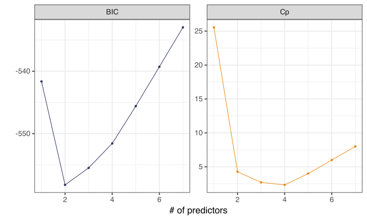
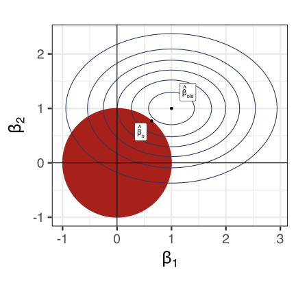
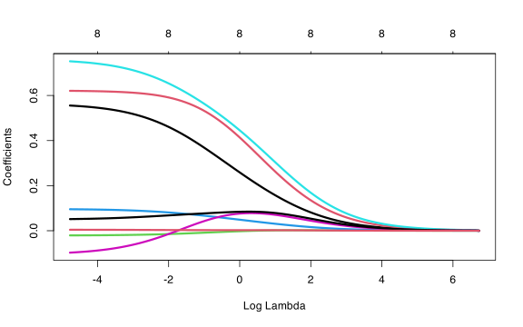
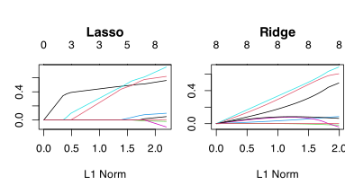

Linear models, selection, regularization, and inference
Stat 550
Daniel J. McDonald
Last modified – 03 April 2024
\[ \DeclareMathOperator*{\argmin}{argmin} \DeclareMathOperator*{\argmax}{argmax} \DeclareMathOperator*{\minimize}{minimize} \DeclareMathOperator*{\maximize}{maximize} \DeclareMathOperator*{\find}{find} \DeclareMathOperator{\st}{subject\,\,to} \newcommand{\E}{E} \newcommand{\Expect}[1]{\E\left[ #1 \right]} \newcommand{\Var}[1]{\mathrm{Var}\left[ #1 \right]} \newcommand{\Cov}[2]{\mathrm{Cov}\left[#1,\ #2\right]} \newcommand{\given}{\mid} \newcommand{\X}{\mathbf{X}} \newcommand{\x}{\mathbf{x}} \newcommand{\y}{\mathbf{y}} \newcommand{\P}{\mathcal{P}} \newcommand{\R}{\mathbb{R}} \newcommand{\norm}[1]{\left\lVert #1 \right\rVert} \newcommand{\snorm}[1]{\lVert #1 \rVert} \newcommand{\tr}[1]{\mbox{tr}(#1)} \newcommand{\U}{\mathbf{U}} \newcommand{\D}{\mathbf{D}} \newcommand{\V}{\mathbf{V}} \renewcommand{\hat}{\widehat} \]
Recap
Model Selection means select a family of distributions for your data.
Ideally, we’d do this by comparing the \(R_n\) for one family with that for another.
We’d use whichever has smaller \(R_n\).
But \(R_n\) depends on the truth, so we estimate it with \(\widehat{R}\).
Then we use whichever has smaller \(\widehat{R}\).
Example
The truth:
Model 1: \(y_i = \beta_0 + \beta_1 x_{i1} + \beta_2 x_{i2} + \epsilon_i\), \(\quad\epsilon_i \overset{iid}{\sim} N(0, \sigma^2)\)
Model 2: y ~ x1 + x2 + x1*x2 (what’s the math version?)
Model 3: y ~ x2 + sin(x1 * x2)
Fit each model and estimate \(R_n\)
list("y ~ x1 + x2", "y ~ x1 * x2", "y ~ x2 + sin(x1*x2)") |>
map(~ {
fits <- lm(as.formula(.x), data = dat)
tibble(
R2 = summary(fits)$r.sq,
training_error = mean(residuals(fits)^2),
loocv = mean( (residuals(fits) / (1 - hatvalues(fits)))^2 ),
AIC = AIC(fits),
BIC = BIC(fits)
)
}) |> list_rbind()# A tibble: 3 × 5
R2 training_error loocv AIC BIC
<dbl> <dbl> <dbl> <dbl> <dbl>
1 0.589 21.3 22.9 598. 608.
2 0.595 21.0 23.4 598. 611.
3 0.586 21.4 23.0 598. 609.Greedy selection
Note
I’m doing everything for linear models, but applies to generalized linear models.
Model Selection vs. Variable Selection
Model selection is very comprehensive
You choose a full statistical model (probability distribution) that will be hypothesized to have generated the data.
Variable selection is a subset of this. It means
choosing which predictors to include in a predictive model
Eliminating a predictor, means removing it from the model.
Some procedures automatically search predictors, and eliminate some.
We call this variable selection. But the procedure is implicitly selecting a model as well.
Making this all the more complicated, with lots of effort, we can map procedures/algorithms to larger classes of probability models, and analyze them.
Selecting variables / predictors with linear methods
Suppose we have a pile of predictors.
We estimate models with different subsets of predictors and use CV / Cp / AIC / BIC to decide which is preferred.
Sometimes you might have a few plausible subsets. Easy enough to choose with our criterion.
Sometimes you might just have a bunch of predictors, then what do you do?
Best subsets
If we imagine that only a few predictors are relevant, we could solve
\[\min_{\beta\in\R^p} \frac{1}{2n}\norm{Y-\X\beta}_2^2 + \lambda\norm{\beta}_0\]
The \(\ell_0\)-norm counts the number of non-zero coefficients.
This may or may not be a good thing to do.
It is computationally infeasible if \(p\) is more than about 20.
Technically NP-hard (you must find the error of each of the \(2^p\) models)
Though see (Bertsimas, King, and Mazumder 2016) for a method of solving reasonably large cases via mixed integer programming.
Greedy methods
Because this is an NP-hard problem, we fall back on greedy algorithms.
All are implemented by the regsubsets function in the leaps package.
- All subsets
- estimate model based on every possible subset of size \(|\mathcal{S}| \leq \min\{n, p\}\), use one with lowest risk estimate
- Forward selection
- start with \(\mathcal{S}=\varnothing\), add predictors greedily
- Backward selection
- start with \(\mathcal{S}=\{1,\ldots,p\}\), remove greedily
- Hybrid
- combine forward and backward smartly
Note
Within each procedure, we’re comparing nested models.
Costs and benefits
- All subsets
-
👍 estimates each subset
💣 takes \(2^p\) model fits when \(p<n\). If \(p=50\), this is about \(10^{15}\) models. - Forward selection
-
👍 computationally feasible
💣 ignores some models, correlated predictors means bad performance - Backward selection
-
👍 computationally feasible
💣 ignores some models, correlated predictors means bad performance
💣 doesn’t work if \(p>n\) - Hybrid
-
👍 visits more models than forward/backward
💣 slower
Synthetic example
set.seed(2024 - 550)
n <- 550
df <- tibble(
x1 = rnorm(n),
x2 = rnorm(n, mean = 2, sd = 1),
x3 = rexp(n, rate = 1),
x4 = x2 + rnorm(n, sd = .1), # correlated with x2
x5 = x1 + rnorm(n, sd = .1), # correlated with x1
x6 = x1 - x2 + rnorm(n, sd = .1), # correlated with x2 and x1 (and others)
x7 = x1 + x3 + rnorm(n, sd = .1), # correlated with x1 and x3 (and others)
y = x1 * 3 + x2 / 3 + rnorm(n, sd = 2.2) # function of x1 and x2 only
)\(\mathbf{x}_1\) and \(\mathbf{x}_2\) are the true predictors
But the rest are correlated with them
Full model
Call:
lm(formula = y ~ ., data = df)
Residuals:
Min 1Q Median 3Q Max
-6.120 -1.386 -0.060 1.417 6.536
Coefficients:
Estimate Std. Error t value Pr(>|t|)
(Intercept) -0.17176 0.21823 -0.787 0.43158
x1 4.94560 1.62872 3.036 0.00251 **
x2 1.88209 1.34057 1.404 0.16091
x3 0.10755 0.90835 0.118 0.90579
x4 -1.51043 0.97746 -1.545 0.12287
x5 -1.79872 0.94961 -1.894 0.05874 .
x6 -0.08277 0.92535 -0.089 0.92876
x7 -0.05477 0.90159 -0.061 0.95159
---
Signif. codes: 0 '***' 0.001 '**' 0.01 '*' 0.05 '.' 0.1 ' ' 1
Residual standard error: 2.176 on 542 degrees of freedom
Multiple R-squared: 0.6538, Adjusted R-squared: 0.6494
F-statistic: 146.2 on 7 and 542 DF, p-value: < 2.2e-16True model
Call:
lm(formula = y ~ x1 + x2, data = df)
Residuals:
Min 1Q Median 3Q Max
-6.0630 -1.4199 -0.0654 1.3871 6.7382
Coefficients:
Estimate Std. Error t value Pr(>|t|)
(Intercept) -0.12389 0.20060 -0.618 0.537
x1 2.99853 0.09434 31.783 < 2e-16 ***
x2 0.44614 0.09257 4.820 1.87e-06 ***
---
Signif. codes: 0 '***' 0.001 '**' 0.01 '*' 0.05 '.' 0.1 ' ' 1
Residual standard error: 2.179 on 547 degrees of freedom
Multiple R-squared: 0.6498, Adjusted R-squared: 0.6485
F-statistic: 507.5 on 2 and 547 DF, p-value: < 2.2e-16All subsets
Subset selection object
Call: regsubsets.formula(y ~ ., data = df)
7 Variables (and intercept)
Forced in Forced out
x1 FALSE FALSE
x2 FALSE FALSE
x3 FALSE FALSE
x4 FALSE FALSE
x5 FALSE FALSE
x6 FALSE FALSE
x7 FALSE FALSE
1 subsets of each size up to 7
Selection Algorithm: exhaustive
x1 x2 x3 x4 x5 x6 x7
1 ( 1 ) "*" " " " " " " " " " " " "
2 ( 1 ) "*" "*" " " " " " " " " " "
3 ( 1 ) "*" "*" " " " " "*" " " " "
4 ( 1 ) "*" "*" " " "*" "*" " " " "
5 ( 1 ) "*" "*" "*" "*" "*" " " " "
6 ( 1 ) "*" "*" "*" "*" "*" "*" " "
7 ( 1 ) "*" "*" "*" "*" "*" "*" "*"BIC and Cp
Theory
This result is due to Foster and George (1994).
- If the truth is linear.
- \(\lambda = C\sigma^2\log p.\)
- \(\norm{\beta_*}_0 = s\)
\[\frac{\Expect{\norm{\X\beta_*-\X\hat\beta}_2^2}/n}{s\sigma^2/n} \leq 4\log p + 2 + o(1).\]
\[\inf_{\hat\beta}\sup_{\X,\beta_*} \frac{\Expect{\norm{\X\beta_*-\X\hat\beta}_2^2}/n}{s\sigma^2/n} \geq 2\log p - o(\log p).\]
Important
- even if we could compute the subset selection estimator at scale, it’s not clear that we would want to
- (Many people assume that we would.)
- theory provides an understanding of the performance of various estimators under typically idealized conditions
Regularization
Regularization
Another way to control bias and variance is through regularization or shrinkage.
Rather than selecting a few predictors that seem reasonable, maybe trying a few combinations, use them all.
But, make your estimates of \(\beta\) “smaller”
Brief aside on optimization
An optimization problem has 2 components:
- The “Objective function”: e.g. \(\frac{1}{2n}\sum_i (y_i-x^\top_i \beta)^2\).
- The “constraint”: e.g. “fewer than 5 non-zero entries in \(\beta\)”.
A constrained minimization problem is written
\[\min_\beta f(\beta)\;\; \mbox{ subject to }\;\; C(\beta)\]
- \(f(\beta)\) is the objective function
- \(C(\beta)\) is the constraint
Ridge regression (constrained version)
One way to do this for regression is to solve (say): \[ \minimize_\beta \frac{1}{2n}\sum_i (y_i-x^\top_i \beta)^2 \quad \st \sum_j \beta^2_j < s \] for some \(s>0\).
- This is called “ridge regression”.
- Write the minimizer as \(\hat{\beta}_s\).
Compare this to ordinary least squares:
\[ \minimize_\beta \frac{1}{2n}\sum_i (y_i-x^\top_i \beta)^2 \quad \st \beta \in \R^p \]
Geometry of ridge regression (contours)
Reminder of norms we should remember
- \(\ell_q\)-norm
- \(\left(\sum_{j=1}^p |z_j|^q\right)^{1/q}\)
- \(\ell_1\)-norm (special case)
- \(\sum_{j=1}^p |z_j|\)
- \(\ell_0\)-norm
- \(\sum_{j=1}^p I(z_j \neq 0 ) = \lvert \{j : z_j \neq 0 \}\rvert\)
- \(\ell_\infty\)-norm
- \(\max_{1\leq j \leq p} |z_j|\)
Ridge regression
An equivalent way to write
\[\hat\beta_s = \argmin_{ \Vert \beta \Vert_2^2 \leq s} \frac{1}{2n}\sum_i (y_i-x^\top_i \beta)^2\]
is in the Lagrangian form
\[\hat\beta_\lambda = \argmin_{ \beta} \frac{1}{2n}\sum_i (y_i-x^\top_i \beta)^2 + \frac{\lambda}{2} \Vert \beta \Vert_2^2.\]
For every \(\lambda\) there is a unique \(s\) (and vice versa) that makes
\[\hat\beta_s = \hat\beta_\lambda\]
Ridge regression
\(\hat\beta_s = \argmin_{ \Vert \beta \Vert_2^2 \leq s} \frac{1}{2n}\sum_i (y_i-x^\top_i \beta)^2\)
\(\hat\beta_\lambda = \argmin_{ \beta} \frac{1}{2n}\sum_i (y_i-x^\top_i \beta)^2 + \frac{\lambda}{2} \Vert \beta \Vert_2^2.\)
Observe:
- \(\lambda = 0\) (or \(s = \infty\)) makes \(\hat\beta_\lambda = \hat\beta_{ols}\)
- Any \(\lambda > 0\) (or \(s <\infty\)) penalizes larger values of \(\beta\), effectively shrinking them.
\(\lambda\) and \(s\) are known as tuning parameters
Example data
prostate data from [ESL]
# A tibble: 97 × 10
lcavol lweight age lbph svi lcp gleason pgg45 lpsa train
<dbl> <dbl> <int> <dbl> <int> <dbl> <int> <int> <dbl> <lgl>
1 -0.580 2.77 50 -1.39 0 -1.39 6 0 -0.431 TRUE
2 -0.994 3.32 58 -1.39 0 -1.39 6 0 -0.163 TRUE
3 -0.511 2.69 74 -1.39 0 -1.39 7 20 -0.163 TRUE
4 -1.20 3.28 58 -1.39 0 -1.39 6 0 -0.163 TRUE
5 0.751 3.43 62 -1.39 0 -1.39 6 0 0.372 TRUE
6 -1.05 3.23 50 -1.39 0 -1.39 6 0 0.765 TRUE
7 0.737 3.47 64 0.615 0 -1.39 6 0 0.765 FALSE
8 0.693 3.54 58 1.54 0 -1.39 6 0 0.854 TRUE
9 -0.777 3.54 47 -1.39 0 -1.39 6 0 1.05 FALSE
10 0.223 3.24 63 -1.39 0 -1.39 6 0 1.05 FALSE
# ℹ 87 more rowsRidge regression path

Model selection here:
means choose some \(\lambda\)
A value of \(\lambda\) is a vertical line.
This graphic is a “path” or “coefficient trace”
Coefficients for varying \(\lambda\)
Solving the minimization
- One nice thing about ridge regression is that it has a closed-form solution (like OLS)
\[\hat\beta_\lambda = (\X^\top\X + \lambda \mathbf{I})^{-1}\X^\top \y\]
This is easy to calculate in
Rfor any \(\lambda\).However, computations and interpretation are simplified if we examine the Singular Value Decomposition of \(\X = \mathbf{UDV}^\top\).
Recall: any matrix has an SVD.
Here \(\mathbf{D}\) is diagonal and \(\mathbf{U}\) and \(\mathbf{V}\) are orthonormal: \(\mathbf{U}^\top\mathbf{U} = \mathbf{I}\).
Solving the minization
\[\hat\beta_\lambda = (\X^\top\X + \lambda \mathbf{I})^{-1}\X^\top \y\]
Note that \(\mathbf{X}^\top\mathbf{X} = \mathbf{VDU}^\top\mathbf{UDV}^\top = \mathbf{V}\mathbf{D}^2\mathbf{V}^\top\).
Then,
\[\hat\beta_\lambda = (\X^\top \X + \lambda \mathbf{I})^{-1}\X^\top \y = (\mathbf{VD}^2\mathbf{V}^\top + \lambda \mathbf{I})^{-1}\mathbf{VDU}^\top \y = \mathbf{V}(\mathbf{D}^2+\lambda \mathbf{I})^{-1} \mathbf{DU}^\top \y.\]
- For computations, now we only need to invert \(\mathbf{D}\).
Comparing with OLS
- \(\mathbf{D}\) is a diagonal matrix
\[\hat\beta_{ols} = (\X^\top\X)^{-1}\X^\top \y = (\mathbf{VD}^2\mathbf{V}^\top)^{-1}\mathbf{VDU}^\top \y = \mathbf{V}\color{red}{\mathbf{D}^{-2}\mathbf{D}}\mathbf{U}^\top \y = \mathbf{V}\color{red}{\mathbf{D}^{-1}}\mathbf{U}^\top \y\]
\[\hat\beta_\lambda = (\X^\top \X + \lambda \mathbf{I})^{-1}\X^\top \y = \mathbf{V}\color{red}{(\mathbf{D}^2+\lambda \mathbf{I})^{-1}} \mathbf{DU}^\top \y.\]
Notice that \(\hat\beta_{ols}\) depends on \(d_j/d_j^2\) while \(\hat\beta_\lambda\) depends on \(d_j/(d_j^2 + \lambda)\).
Ridge regression makes the coefficients smaller relative to OLS.
But if \(\X\) has small singular values, ridge regression compensates with \(\lambda\) in the denominator.
Multicollinearity
Ridge regression and multicollinearity
Multicollinearity: a linear combination of predictor variables is nearly equal to another predictor variable.
Multicollinearity questions
- Can I test
cor(x1, x2) == 0to determine if these are collinear? - What plots or summaries can I look at?
- If multivariate regression or logistic regression is applied on a data set with many explanatory variables, what in the regression output might indicate potential multicollinearity?
- Is there a test or diagnostic procedure for multicollinearity?
Multicollinearity thoughts
Some comments:
A better phrase: \(\X\) is ill-conditioned
AKA “(numerically) rank-deficient”.
\(\X = \mathbf{U D V}^\top\) ill-conditioned \(\Longleftrightarrow\) some elements of \(\mathbf{D} \approx 0\)
\(\hat\beta_{ols}= \mathbf{V D}^{-1} \mathbf{U}^\top \y\). Small entries of \(\mathbf{D}\) \(\Longleftrightarrow\) huge elements of \(\mathbf{D}^{-1}\)
Means huge variance: \(\Var{\hat\beta_{ols}} = \sigma^2(\X^\top \X)^{-1} = \sigma^2 \mathbf{V D}^{-2} \mathbf{V}^\top\)
If you’re doing prediction, this is a purely computational concern.
Ridge regression and ill-posed \(\X\)
Ridge Regression fixes this problem by preventing the division by a near-zero number
- Conclusion
- \((\X^{\top}\X)^{-1}\) can be really unstable, while \((\X^{\top}\X + \lambda \mathbf{I})^{-1}\) is not.
- Aside
- Engineering approach to solving linear systems is to always do this with small \(\lambda\). The thinking is about the numerics rather than the statistics.
Which \(\lambda\) to use?
- Computational
- Use CV and pick the \(\lambda\) that makes this smallest.
- Intuition (bias)
- As \(\lambda\rightarrow\infty\), bias ⬆
- Intuition (variance)
- As \(\lambda\rightarrow\infty\), variance ⬇
You should think about why.
Can we get the best of both worlds?
To recap:
Deciding which predictors to include, adding quadratic terms, or interactions is model selection (more precisely variable selection within a linear model).
Ridge regression provides regularization, which trades off bias and variance and also stabilizes multicollinearity.
If the LM is true,
- OLS is unbiased, but Variance depends on \(\mathbf{D}^{-2}\). Can be big.
- Ridge is biased (can you find the bias?). But Variance is smaller than OLS.
Ridge regression does not perform variable selection.
But picking \(\lambda=3.7\) and thereby deciding to predict with \(\widehat{\beta}^R_{3.7}\) is model selection.
Can we get the best of both worlds?
- Ridge regression
- \(\minimize \frac{1}{2n}\Vert\y-\X\beta\Vert_2^2 \ \st\ \snorm{\beta}_2^2 \leq s\)
- Best (in-sample) linear regression model of size \(s\)
- \(\minimize \frac{1}{2n}\snorm{\y-\X\beta}_2^2 \ \st\ \snorm{\beta}_0 \leq s\)
\(||\beta||_0\) is the number of nonzero elements in \(\beta\)
Finding the best in-sample linear model (of size \(s\), among these predictors) is a nonconvex optimization problem (In fact, it is NP-hard)
Ridge regression is convex (easy to solve), but doesn’t do variable selection
Can we somehow “interpolate” to get both?
Note: selecting \(\lambda\) is still model selection, but we’ve included all the variables.
Ridge theory
Recalling that \(\beta^\top_*x\) is the best linear approximation to \(f_*(x)\)
If \(\norm{x}_\infty< r\), (Hsu, Kakade, and Zhang 2014), \[R(\hat\beta_\lambda) - R(\beta_*) \leq \left(1+ O\left(\frac{1+r^2/\lambda}{n}\right)\right) \frac{\lambda\norm{\beta_*}_2^2}{2} + \frac{\sigma^2\tr{\Sigma}}{2n\lambda}\]
Optimizing over \(\lambda\), and setting \(B=\norm{\beta_*}\) gives
\[R(\hat\beta_\lambda) - R(\beta_*) \leq \sqrt{\frac{\sigma^2r^2B^2}{n}\left(1+O(1/n)\right)} + O\left(\frac{r^2B^2}{n}\right)\]
\[\inf_{\hat\beta}\sup_{\beta_*} R(\hat\beta) - R(\beta_*) \geq C\sqrt{\frac{\sigma^2r^2B^2}{n}}\]
Ridge theory
We call this behavior rate minimax: essential meaning, \[R(\hat\beta) - R(\beta_*) = O\left(\inf_{\hat\beta}\sup_{\beta_*} R(\hat\beta) - R(\beta_*)\right)\]
In this setting, Ridge regression does as well as we could hope, up to constants.
Bayes interpretation
If
- \(Y=X'\beta + \epsilon\),
- \(\epsilon\sim N(0,\sigma^2)\)
- \(\beta\sim N(0,\tau^2 I_p)\),
Then, the posterior mean (median, mode) is the ridge estimator with \(\lambda=\sigma^2/\tau^2\).
Lasso
Geometry
Code
library(mvtnorm)
normBall <- function(q = 1, len = 1000) {
tg <- seq(0, 2 * pi, length = len)
out <- data.frame(x = cos(tg)) %>%
mutate(b = (1 - abs(x)^q)^(1 / q), bm = -b) %>%
gather(key = "lab", value = "y", -x)
out$lab <- paste0('"||" * beta * "||"', "[", signif(q, 2), "]")
return(out)
}
ellipseData <- function(n = 100, xlim = c(-2, 3), ylim = c(-2, 3),
mean = c(1, 1), Sigma = matrix(c(1, 0, 0, .5), 2)) {
df <- expand.grid(
x = seq(xlim[1], xlim[2], length.out = n),
y = seq(ylim[1], ylim[2], length.out = n)
)
df$z <- dmvnorm(df, mean, Sigma)
df
}
lballmax <- function(ed, q = 1, tol = 1e-6) {
ed <- filter(ed, x > 0, y > 0)
for (i in 1:20) {
ff <- abs((ed$x^q + ed$y^q)^(1 / q) - 1) < tol
if (sum(ff) > 0) break
tol <- 2 * tol
}
best <- ed[ff, ]
best[which.max(best$z), ]
}
nb <- normBall(1)
ed <- ellipseData()
bols <- data.frame(x = 1, y = 1)
bhat <- lballmax(ed, 1)
ggplot(nb, aes(x, y)) +
geom_path(colour = red) +
geom_contour(mapping = aes(z = z), colour = blue, data = ed, bins = 7) +
geom_vline(xintercept = 0) +
geom_hline(yintercept = 0) +
geom_point(data = bols) +
coord_equal(xlim = c(-2, 2), ylim = c(-2, 2)) +
theme_bw(base_family = "", base_size = 24) +
geom_label(
data = bols, mapping = aes(label = bquote("hat(beta)[ols]")), parse = TRUE,
nudge_x = .3, nudge_y = .3
) +
geom_point(data = bhat) +
xlab(bquote(beta[1])) +
ylab(bquote(beta[2])) +
geom_label(
data = bhat, mapping = aes(label = bquote("hat(beta)[s]^L")), parse = TRUE,
nudge_x = -.4, nudge_y = -.4
)\(\ell_1\)-regularized regression
Known as
- “lasso”
- “basis pursuit”
The estimator satisfies
\[\hat\beta_s = \argmin_{ \snorm{\beta}_1 \leq s} \frac{1}{2n}\snorm{\y-\X\beta}_2^2\]
In its corresponding Lagrangian dual form:
\[\hat\beta_\lambda = \argmin_{\beta} \frac{1}{2n}\snorm{\y-\X\beta}_2^2 + \lambda \snorm{\beta}_1\]
Lasso
While the ridge solution can be easily computed
\[\argmin_{\beta} \frac 1n \snorm{\y-\X\beta}_2^2 + \lambda \snorm{\beta}_2^2 = (\X^{\top}\X + \lambda \mathbf{I})^{-1} \X^{\top}\y\]
the lasso solution
\[\argmin_{\beta} \frac 1n\snorm{\y-\X\beta}_2^2 + \lambda \snorm{\beta}_1 = \; ??\]
doesn’t have a closed-form solution.
However, because the optimization problem is convex, there exist efficient algorithms for computing it
Coefficient path: ridge vs lasso
Additional intuition for why Lasso selects variables
Suppose, for a particular \(\lambda\), I have solutions for \(\widehat{\beta}_k\), \(k = 1,\ldots,j-1, j+1,\ldots,p\).
Let \(\widehat{\y}_{-j} = \X_{-j}\widehat{\beta}_{-j}\), and assume WLOG \(\overline{\X}_k = 0\), \(\X_k^\top\X_k = 1\ \forall k\)
One can show that:
\[ \widehat{\beta}_j = S\left(\mathbf{X}^\top_j(\y - \widehat{\y}_{-j}),\ \lambda\right). \]
\[ S(z, \gamma) = \textrm{sign}(z)(|z| - \gamma)_+ = \begin{cases} z - \gamma & z > \gamma\\ z + \gamma & z < -\gamma \\ 0 & |z| \leq \gamma \end{cases} \]
- Iterating over this is called coordinate descent and gives the solution
{glmnet} version (same procedure for lasso or ridge)
lasso <- cv.glmnet(X, Y) # estimate full model and CV no good reason to call glmnet() itself
# 2. Look at the CV curve. If the dashed lines are at the boundaries, redo and adjust lambda
lambda_min <- lasso$lambda.min # the value, not the location (or use lasso$lambda.1se)
coeffs <- coefficients(lasso, s = "lambda.min") # s can be string or a number
preds <- predict(lasso, newx = X, s = "lambda.1se") # must supply `newx`- \(\widehat{R}_{CV}\) is an estimator of \(R_n\), it has bias and variance
- Because we did CV, we actually have 10 \(\widehat{R}\) values, 1 per split.
- Calculate the mean (that’s what we’ve been using), but what about SE?
Other flavours
- The elastic net
-
generally used for correlated variables that combines a ridge/lasso penalty. Use
glmnet(..., alpha = a)(0 <a< 1). - Grouped lasso
- where variables are included or excluded in groups. Required for factors (1-hot encoding)
- Relaxed lasso
-
Takes the estimated model from lasso and fits the full least squares solution on the selected covariates (less bias, more variance). Use
glmnet(..., relax = TRUE). - Dantzig selector
- a slightly modified version of the lasso
Lasso cinematic universe
- SCAD
- a non-convex version of lasso that adds a more severe variable selection penalty
- \(\sqrt{\textrm{lasso}}\)
- claims to be tuning parameter free (but isn’t). Uses \(\Vert\cdot\Vert_2\) instead of \(\Vert\cdot\Vert_1\) for the loss.
- Generalized lasso
- Adds various additional matrices to the penalty term (e.g. \(\Vert D\beta\Vert_1\)).
- Arbitrary combinations
- combine the above penalties in your favourite combinations

Warnings on regularized regression
- This isn’t a method unless you say how to choose \(\lambda\).
- The intercept is never penalized. Adds an extra degree-of-freedom.
- Predictor scaling is very important.
- Discrete predictors need groupings.
- Centering the predictors may be necessary
- (These all work with other likelihoods.)
Software handles most of these automatically, but not always. (No Lasso with factor predictors.)
Lasso theory under strong conditions
Support recovery: (Wainwright 2009), see also (Meinshausen and Bühlmann 2006; Zhao and Yu 2006)
- The truth is linear.
- \(\norm{\X'_{S^c}\X_S (\X'_S\X_S)^{-1}}_\infty < 1-\epsilon.\)
- \(\lambda_{\min} (\X'_S\X_S) \geq C_{\min} > 0\).
- The columns of \(\X\) have 2-norm \(n\).
- The noise is iid Normal.
- \(\lambda_n\) satisfies \(\frac{n\lambda^2}{\log(p-s)} \rightarrow \infty\).
- \(\min_j \{ |\beta_j| : j \in S\} \geq \rho_n > 0\) and \[\rho_n^{-1} \left( \sqrt{\frac{\log s}{n}}+ \lambda_n\norm{(\X'_S\X_S)^{-1}}_\infty \right)\rightarrow 0\]
Then, \(P(\textrm{supp}(\hat\beta_\lambda) = \textrm{supp}(\beta_*))\rightarrow 1\).
Lasso theory under strong conditions
Estimation consistency: (Negahban et al. 2012) also (Meinshausen and Yu 2009)
- The truth is linear.
- \(\exists \kappa\) such that for all vectors \(\theta\in\R^p\) that satisfy \(\norm{\theta_{S^C}}_1 \leq 3\norm{\theta_S}_1\), we have \(\norm{X\theta}_2^2/n \geq \kappa\norm{\theta}_2^2\) (Compatibility)
- The columns of \(\X\) have 2-norm \(n\).
- The noise is iid sub-Gaussian.
- \(\lambda_n >4\sigma \sqrt{\log (p)/n}\).
Then, with probability at least \(1-c\exp(-c'n\lambda_n^2)\),
\[\norm{\hat\beta_\lambda-\beta_*}_2^2 \leq \frac{64\sigma^2}{\kappa^2}\frac{s\log p}{n}.\]
Important
These conditions are very strong, uncheckable in practice, unlikely to be true for real datasets. But theory of this type is the standard for these procedures.
Lasso under weak / no conditions
If \(Y\) and \(X\) are bounded by \(B\), then with probability at least \(1-\delta^2\), \[R_n(\hat\beta_\lambda) - R_n(\beta_*) \leq \sqrt{\frac{16(t+1)^4B^2}{n}\log\left(\frac{\sqrt{2}p}{\delta}\right)}.\]
This is a simple version of a result in (Greenshtein and Ritov 2004).
Note that it applies to the constrained version.
(Bartlett, Mendelson, and Neeman 2012) derives the same rate for the Lagrangian version
Again, this rate is (nearly) optimal: \[c\sqrt{\frac{s}{n}} < R_n(\hat\beta_\lambda) - R_n(\beta_*) < C\sqrt{\frac{s\log p}{n}}.\]
\(\log p\) is the penalty you pay for selection.
References
UBC Stat 550 - 2024